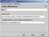

|
 |
<< Previous | Next >> | Table of Contents
4 Connections and Datasources
Data to print can be retrived in several ways from different places like a database or a XML file. This data is presented to JasperReports always in form of records using a special interface called JRDataSource.
JasperReports comes with a good set of implementations of this interface to wrap JDBC ResultSets, TableModels, Collections, Vectors and Arrays of objects, etc...
But not always a JRDataSource is needed to supply data to the report in order to fill it. In fact JasperReports can execute yourself sql queries using a given opened Connection to a database,
and use the result to fill the report. How we'll see, this features will be very useful and easy to use.
4.1 Types of datasource
iReport supports JDBC connections and 4 types of datasource (that can be used to wrap any kind of custom datasource).
- Empty data source (JREmptyDatasource): is a special datasource used to fill report that don't expose any records. This datasource is used when you press the button to "run" a report.
- XML DataSource (not yet implemented): is a datasource capable to wrap an XML file and normalize its content.
| | Fig.4.1: XML datasource definition. |
The only informations needed to create this type of datasource are a name (for the datasource) and the name of the XML file.
- JavaBeans Set Datasource (not yet implemented): is a datasource capable to wrap a Collection or an Array of JavaBeans.
| | Fig.4.2: JavaBeans Set datasource definition. |
How all the rest of datasources used by iReport and presented here, this datasource need a spacial factory class that provides a static method to generate a collection or an array of JavaBeans (alias a set of Objects).
To create this datasource you need a name for the datasource, the name of a class that will provide the static method to call to retrive the Array/Collection of Objects and the name of this method that will
have a definition like this:
public static Collection createMyCollection()
or
public static Object[] createMyArray()
Remember to set the type of result (Collection or Array).
- Custom Datasource: this type of datasource is generic. iReport don't know how the JRDataSource is implemented by this particular connection but it's not important.
|  | | Fig.4.3: Custom JRDatasource definition. |
This datasource need a spacial factory class that provides a static method that return a JRDataSource.
To create this datasource you need a name for the datasource, the name of a class that will provide the static method to call to retrive the JRDataSource and the name of this method that will
have a definition like this:
public static JRDataSource createMyJRDataSource()
An example of implementation of a custom datasource is provided at the end of this chapter.
4.2 Setting up a JDBC connection
To set up a JDBC connection we need a running JDBC capable DBMS (I like MySQL), an appropriate JDBC driver to access it, a database and a valid account. Are you ready? Let's go!
Select the menu Datasources > Connection/Datasources. Will appeare the frame with the list of datasources and JDBC connections that you have defined. Please note that you can define how many datasources and connecgtions you want but you can, for now, use only one at time. We'll see
how set the "Active connection". Press the "New" button.
| | Fig.4.4: JDBC connection definition frame. |
In the new frame, write a connection name (i.e. "My First JDBC connection"), select the right JDBC driver, you can specify one writing it directly or use one already present in the list. Please note that this drivers are not shipped with iReport (except MySQL driver),
be sure that the driver that you want use is in the classpath. Putting a jar in the lib directory of iReport can be a good idea, but the jars present in this directory are added to the CLASSPATH only when iReport start (from version 0.3.1 iReport supports dynamic classpath, this means that you can put new jars in lib without restart iReport).
Before write the URL, write the database name, then press the button "Wizard". In this way, if iReport recognize the driver, it will suggest a URL to use with.
Set the username and the password, then test the connection pressing the Test button.
| | Fig.4.5: The connection is OK. |
If all it's OK, a dialog box (Fig. 4.5) will inform you of the test success.
Many software use a very similar way to setting up a JDBC connection. You can refer to the specific JDBC driver documentation to know all
options offered by the driver and the exact syntax of the URL.
All most used DBMS have a JDBC driver. If you need to access a database via ODBC on a Win32 system, you can use the JDBC-ODBC brigde, a special JDBC driver developed by Sun Inc.. But I suggest to verify first the presence of a JDBC driver.
iReport for default don't store connection passwords. If you want store it, you must first check the "Save password" checkbox.
Press the "Save" button to definitly store the connection in the iReport connections pool.
4.3 Setting up a custom datasource
I will not bore to you with other basic slight notions on which button you must press in order to execute what is written on it...
If you have not, read the previous paragraph that explains where put hands to create a new datasource/connection. You only should to kwnow that you can choose the type of your datasource selecting it by the combobox in the connection frame.
When you have filled all fields, test it with the test button.
In this session we have created a simple report, saved as XML file, compiled as jasper file, filled with an "EmptyDataSource" end exported in PDF.
4.4 Implementing a new custom datasource
This topic is more a JasperReports releated argument, than an iReport feature explanation. But I think that can be useful know how you can develope your custom data driver (alias JRDataSource).
We will write a very simple JRDataSource that retrive fields from a CSV file. A CSV file is a text file that contains a set row. Any row contains a cartain number of fields separated by a special character (i.e. teh semicolon ';').
What must do our datasource is retrive this rows and return the right value to JasperReport when it ask for a fields (or column).
What we have to do is implement this very simple interface:
package dori.jasper.engine;
public interface JRDataSource
{
public boolean next() throws JRException;
public Object getFieldValue(JRField jrField) throws JRException;
}
|
A JRField is a vary simple class to. It contains the name of the field (a String), and the java Class that represents the type of this field. In our case all fields are of type String, but we can choose to use as field name (alias the column name) the values of the first row of our
cvs file or a generic name as COLUMN_1, COLUMN_2, ... This is the same way used by JasperReport in implementation of the TableModel wrapper datasource, that can indifferently use as column name the value of the column
header (if present) or the special name COLUMN_<n> with n in the set {0,1,2,3,...,k}.
We'll use fixed names to refer columns in our datasource (COLUMN_1, COLUMN_2, ...).
This is the code:
1
2
3 import java.io.*;
4 import java.util.*;
5
6 public class JRCSVDataSource implements dori.jasper.engine.JRDataSource {
7
8 String row = "";
9 LineNumberReader lineNumberReader;
10
11
12 public JRCSVDataSource(String cvsFile) {
13 try {
14 lineNumberReader = new LineNumberReader( new FileReader(cvsFile));
15 } catch (Exception ex) { }
16 }
17
18 public Object getFieldValue(dori.jasper.engine.JRField jRField) throws dori.jasper.engine.JRException {
19 String field = jRField.getName();
20 int fieldPosition = Integer.parseInt(field.substring(7)); StringTokenizer st = new StringTokenizer(row,";");
22 while (st.hasMoreTokens())
23 {
24 fieldPosition--; String token = st.nextToken();
26 if (fieldPosition == 0) return token;
27 }
28 return null; }
30
31 public boolean next() throws dori.jasper.engine.JRException {
32 try {
33 row = lineNumberReader.readLine();
34 if (row.length()>0) return true;
35 } catch (Exception ex) { }
36 return false;
37 }
38 }
How you can see, only 38 lines of code... It's time to test it...
We'll write a little "JRDataSourcFactory" in order to use it with iReport.
This factory will instance a JRCSVDataSource and will return it with the static method: getTheDatasource()
1 package it.businesslogic.ireport.connection;
2
3 public class CSVDatasourceTestFactory {
4
5 public dori.jasper.engine.JRDataSource getTheDatasource( )
6 {
7 return new JRCSVDataSource("test.csv");
8 }
9 }
10
Open iReport, create a new custom JRDataSource connection and fill all fields as in Fig. 4.6, test and save the connection.
| | Fig.4.6: The new CSV datasource connection. |
Now go to Build > Set active connection and select our new connection ("CSV Datasource (test.csv)")
 | | Fig.4.7: Set the active connection. |
This is the result. We'll soon learn how to create the trial report used to test our datasource.
| | Fig.4.8: The result print. |
<< Previous | Next >> | Table of Contents
|
|
|

{kind=link}
{kind=link}
{kind=link}
{kind=link}
{kind=link}
{kind=link}